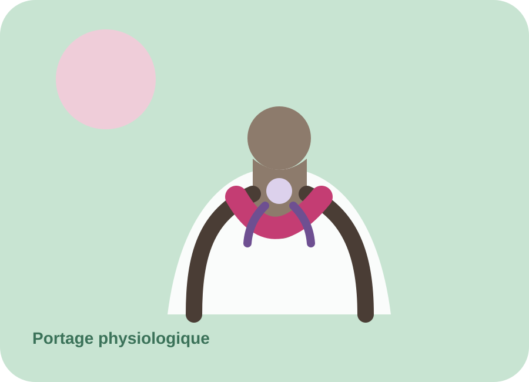

01
Soins de développement
Contribuer à un environnement de soins attentif au rythme, au confort et au développement du nouveau-né.
À p'tits pas agit pour améliorer le quotidien des nouveau-nés hospitalisés en néonatologie, soutenir leurs familles et accompagner les professionnels au plus près du terrain.

Notre mission
À p'tits pas est née en 2014 de l'initiative de professionnels de la néonatologie du CHU de Bordeaux Pellegrin.
01
Contribuer à un environnement de soins attentif au rythme, au confort et au développement du nouveau-né.
02
Soutenir la place des parents et améliorer le vécu de l'hospitalisation.
03
Encourager la transmission, la formation continue et le développement des compétences.
Au plus près des familles
L'association s'inscrit dans une approche globale de la néonatologie : soins de développement, lien parent-bébé, portage physiologique, allaitement et accompagnement à la parentalité.

Soins de développement
Des pratiques pensées autour des besoins du nouveau-né.

Portage
Le contact et la proximité ont leur place dès l'hospitalisation.
Parentalité
Donner aux parents une vraie place auprès de leur enfant.

Formation
Soutenir les professionnels dans leurs pratiques.
Des actions concrètes
La néonatologie en quelques chiffres
Chiffres issus des données de présentation du service, à actualiser si nécessaire.
Actualités
Plus de 1 000 € récoltés lors de cette première édition.
Lire la suite →7 000 € investis pour améliorer cet espace dédié aux familles.
Lire la suite →Un équipement pensé pour favoriser le confort et le lien parent-bébé.
Lire la suite →Soutenir l'association